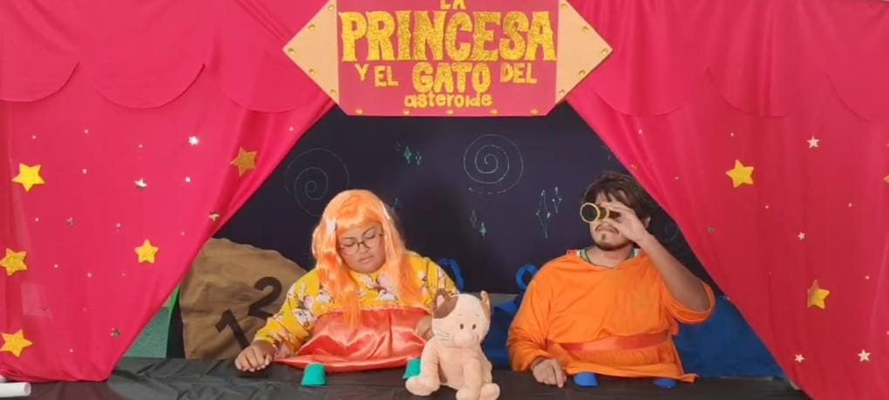
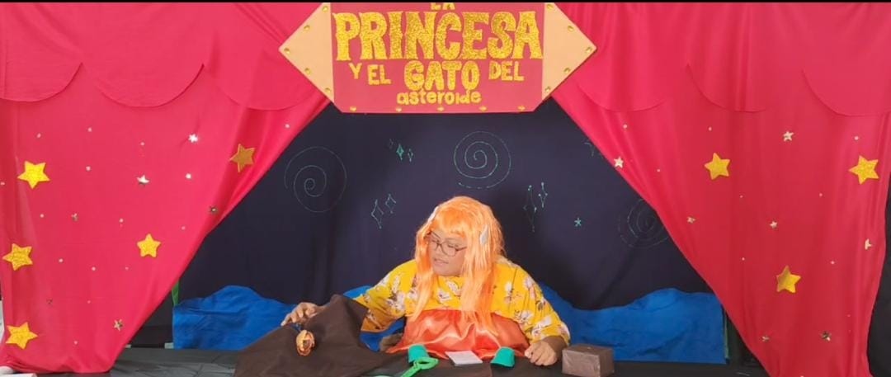

¿En qué consiste?
La técnica de enanos es un recurso visual utilizado en cine, fotografía y teatro para simular que un personaje o elemento es mucho más pequeño de lo que realmente es. Se logra mediante el uso de maquetas, escenarios a escala, perspectiva forzada o efectos visuales. Su objetivo es crear la ilusión de miniatura, y es común en producciones de fantasía, cuentos infantiles o escenas que requieren mundos imaginarios. Esta técnica permite representar lo pequeño sin recurrir a efectos digitales complejos.
Referencias en la obra
Dos personajes disfrazados se ubican al centro: uno con peluca naranja, otro con túnica similar. Entre ellos, un gato de peluche sugiere el rol protagónico. El fondo negro con espirales, estrellas doradas y cortinas rojas crea una atmósfera cósmica. Un cartel presenta el título de la obra.
La escena teatral muestra un personaje disfrazado con peluca naranja y túnica amarilla, de pie tras una mesa decorada con una pala verde, bolsa marrón y otros objetos. El fondo incluye cortinas rojas, estrellas doradas y espirales, creando una atmósfera lúdica y mágica.
Tres personajes actúan frente a un fondo cálido y decorado artesanalmente. Uno usa micrófono, otro gesticula, y el tercero observa con seriedad. El entorno sugiere una representación escénica con energía colaborativa. Los colores, posturas y expresiones transmiten concentración, entusiasmo y creatividad en un momento compartido de expresión artística.
